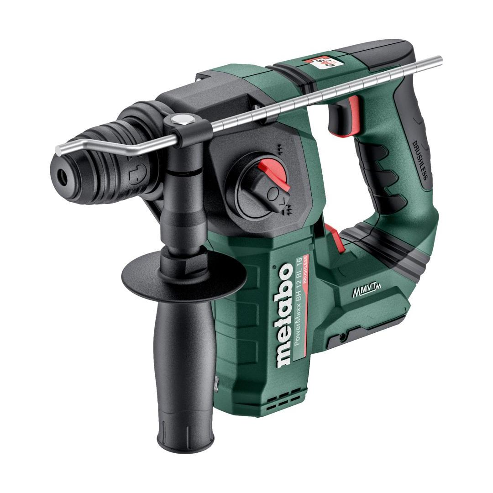
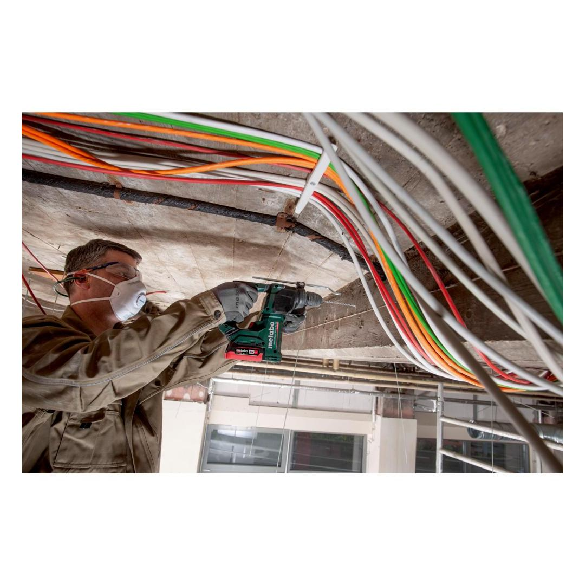
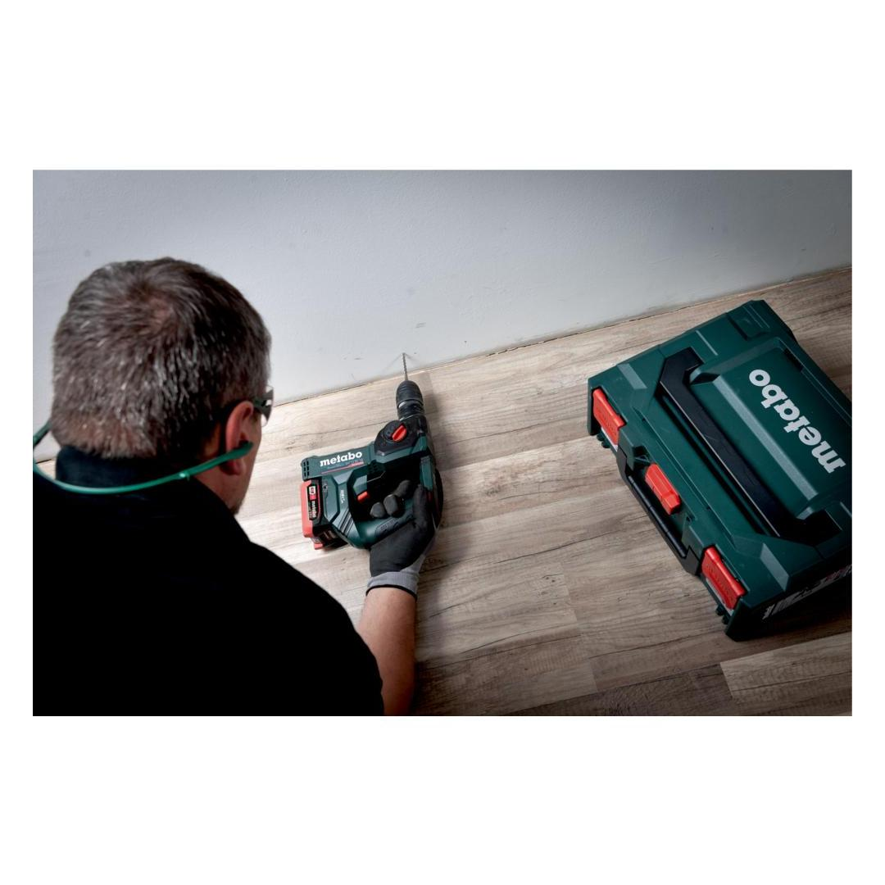
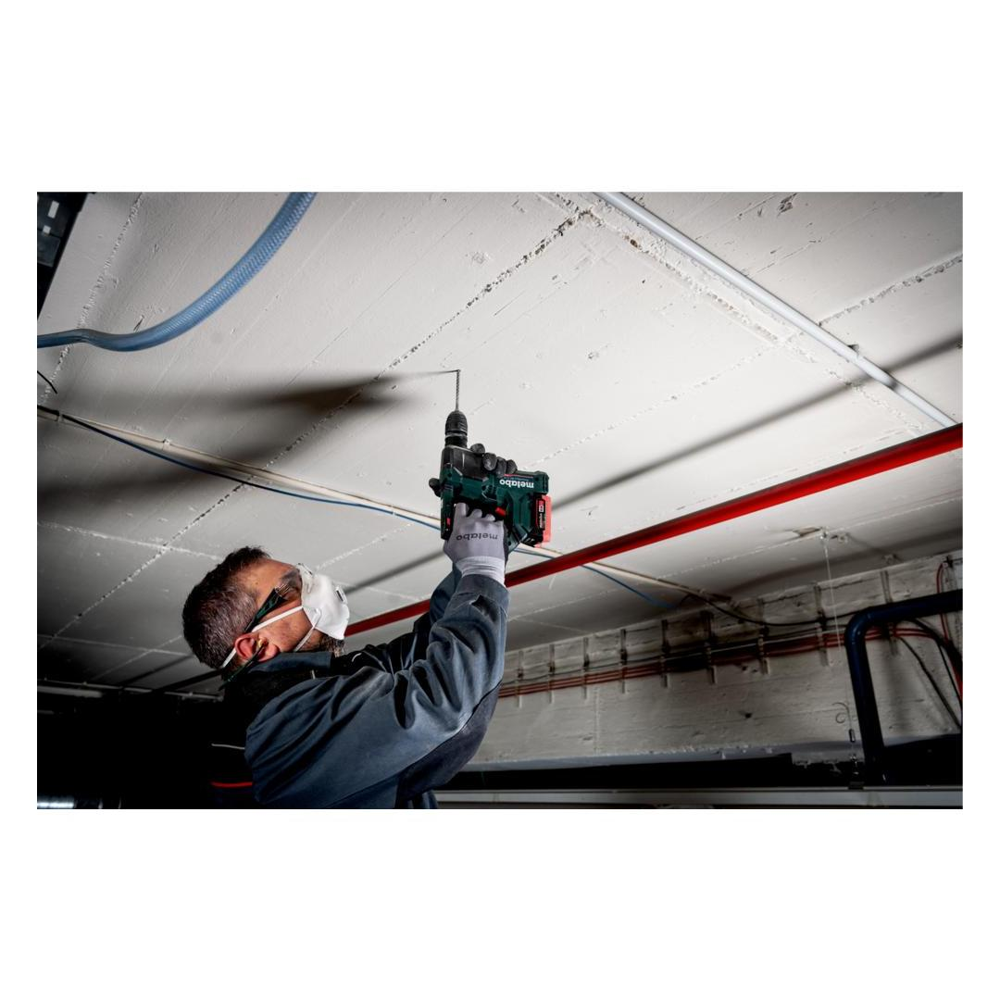
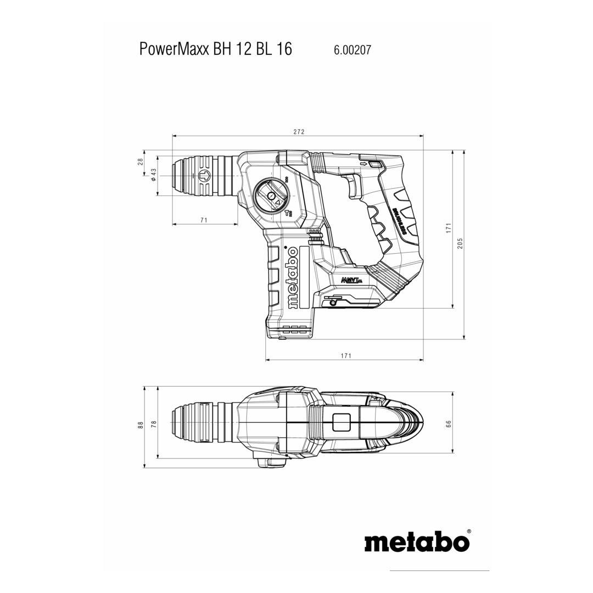

602205840





| Battery voltage | 12 V |
| Max. single blow energy (EPTA) | 1.3 J |
| Maximum impact rate | 5250 bpm |
| Drill-Ø concrete with hammer drills | 16 mm / 5/8 " |
| Tool holder | SDS-plus |
hammer drilling and drilling
Brushless MotorUnique Metabo brushless motor for quick work progress and highest efficiency for any application
Metabo VibraTech (MVT)vibration damping for convenient continuous mode
Vario Tacho Constamatic (VTC) Full-wave Electronics with Thumbwheelfor working at customised speeds to suit the application material and speeds that remain almost constant, even under load
| Battery voltage | 12 V |
| Max. single blow energy (EPTA) | 1.3 J |
| Maximum impact rate | 5250 bpm |
| Drill-Ø concrete with hammer drills | 16 mm / 5/8 " |
| Drill-Ø masonry with core bits | 68 mm / 2.675 " |
| Drill Ø steel | 13 mm / 1/2 " |
| Drill-Ø soft wood | 20 mm / 25/32 " |
| No-load speed | 0 - 730 rpm |
| Tool holder | SDS-plus |
| Weight without battery pack | 1.7 kg / 3.7 lbs |
| Weight with battery pack | 1.9 kg / 4.2 lbs |
| Hammer drilling concrete | 12.1 m/s² |
| Uncertainty of measurement K | 1.5 m/s² |
| Sound pressure level | 90 dB(A) |
| Sound power level (LwA) | 98 dB(A) |
| Uncertainty of measurement K | 3 dB(A) |
| Side handle |
| Drilling depth guide |
| metaBOX 145 |
| without battery pack, without charger |